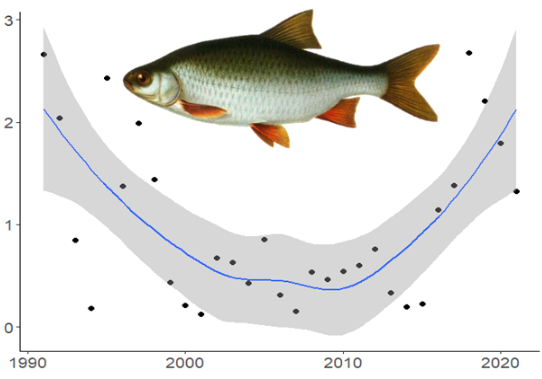
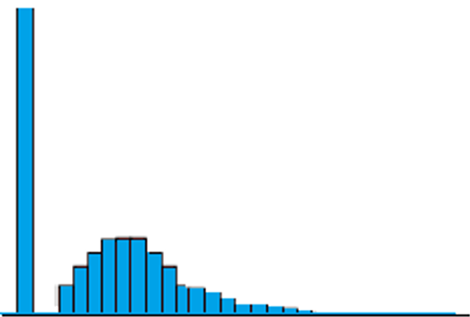
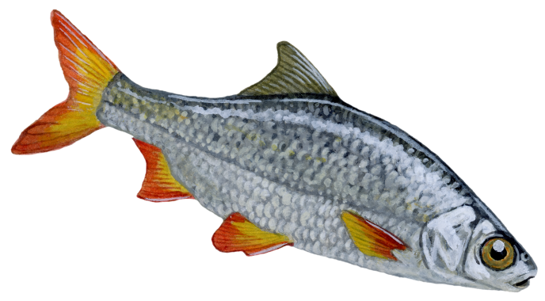
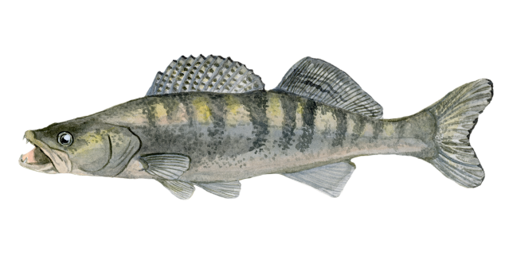
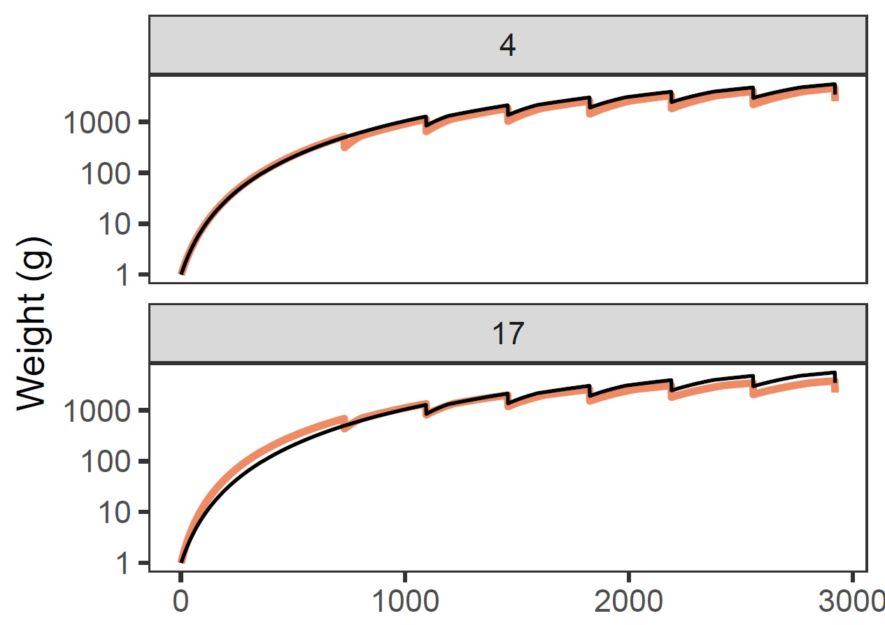
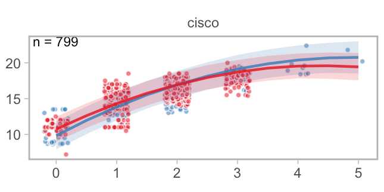
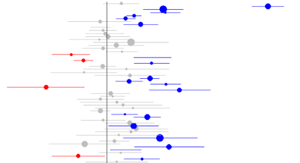
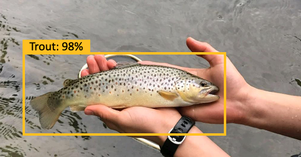
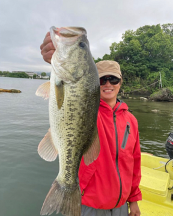
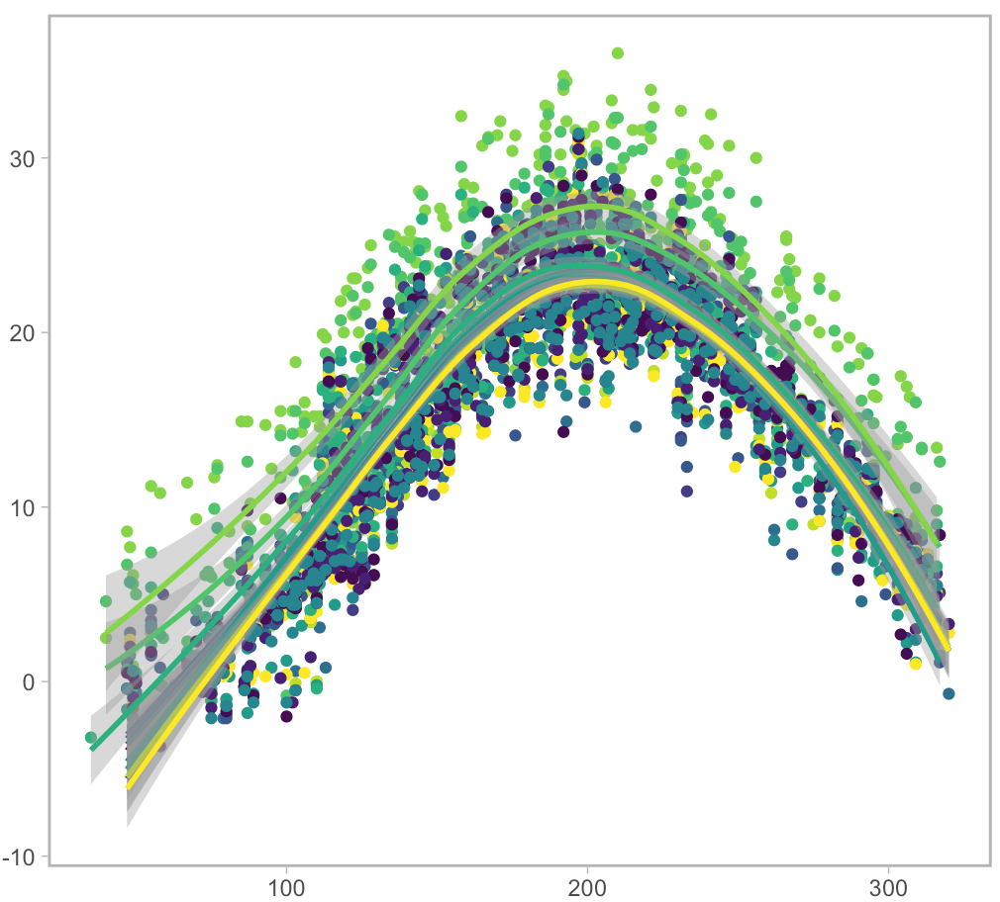

Overview of models
LT—- We have developed and applied a range of statistical and mechanistic models, which we used in our studies and are happy to share with others. We hope these models will be useful for fisheries research and management. The models are available for free non-commercial use, but please reference the original source (publications or this website).
Models for catch per unit effort (CPUE) standardisation
LITHUANIAN: Scientific monitoring and artisanal, commercial or recreational fish catch data is often used to assess population status and trends, but such data are usually complex and require careful standardisation. There are several approaches that can be used for CPUE standardisation and we present three potential models of increasing complexity.

1. Generalized linear model (GLM) based standardisation
LITHUANIAN: This model could be used for scientific monitoring or commercial catch data and applies GLM with Tweedie distribution to extract annual CPUE residuals. Here we apply the model for five common Lithuanian freshwater species.

2. Zero inflated models for CPUE standardisation
LITHUANIAN: If catch data has a lot of zero values, one can also GLMs with adjustments for zero inflation.

3. Bayesian model with INLA
LITHUANIAN: This is a Bayesian model that account for autocorrelation in catches across time and space. It uses approximate Bayesian inference implemented in the INLA package.
LT–Surplus production models for stock assessments
LITHUANIAN: Surplus production (SP) models are commonly used to assess data-poor fish stocks and are based on time series of catches and population abundance index (such as standardised CPUE time series, from the models above). These models assume that fish population abundance depends on its regeneration rate, carrying capacity and catches. SP models have been successfully applied to many stocks and, despite their simple assumptions, often perform surprisingly well, assuming the population abundance and catch time series are reliable.

4. Understand SP models
LITHUANIAN: This little model lets you explore key assumptions behind surplus production population models. See how sustainable yield will depend on population regeneration and fishing mortality rate. See how catching more fish sometimes can give you less long term yield.

5. Apply SP models with JABBA
LITHUANIAN: JABBA is an advanced and user friendly surplus production modelling framework. Here you can learn about its application and explore five models adapted for five Lithuanian fish species, from Curonian lagoon and Kaunas Water reservoir.
LITHUANIAN Fish growth models
LITHUANIAN Fish growth and therefore body sizes are highly variable, as it depends on temperature, food availability and many other processes. Understanding and modelling how and why growth can change is therefore an important part of fisheries research.

6. Von-Bertalanffy growth
LITHUANIAN: With this model you can explore Von-Bertalanffy function parameters and asses how well it fits your data. You can also visualise how variation in growth will make size classes indistinguishable as fish get older.

7. Temperature impacts on growth
LITHUANIAN: Mechanistic life-history optimisation based model to assess how temperature driven changes in intake, metabolism and reproduction can affect growth. You can run this model in Excel or R.

8. Detecting growth changes
LITHUANIAN: Bayesian model to estimate changes in growth parameters from a time series of age-length data. The model is applied to fish growth data from a nuclear power plant heated lake in Lithuania.

9. Detecting size changes
LITHUANIAN: Bayesian model to estimate long term changes in average fish size using long term monitoring datasets from multiple locations.
Machine learning models
LITHUANIAN: Machine learning (ML) enables rapid analyses of large image and datasets and is an important step to facilitate citizen science driven data collection techniques. During our project we have developed two machine learning models for fish species and size identification.

10. ML for species identification
LITHUANIAN: Here you can learn about our pipeline for machine learning based image classification tools. The pipeline has been applied to fish species identification, but could be used for any other images classes.

11. ML for fish size estimation
LITHUANIAN: Information on fish sizes is very important for population management, but many citizen science or social media platforms do not collect it. We are also developing a model to identify fish sizes based on photos of anglers holding fish.
Satellite data analysis
Remote sensing and satellite data is now being collected on high temporal and spatial resolution. However, it is often challenging to access and process these data. We have developed some models and tools to aid with satellite based water surface temperature and chlorophyll A data acquisition and analysis.

12. Satellite based temperature data
This is a use friendly model and tool to extract and analyse satellite based water surface temperature observations from Google Earth engine. You will need a Google account and coordinates of your locations.
13. Satellite based chlorophyll A data
This tool will help you extract chlorophyll A data from satellite observations and apply a model to filter out unreliable data and estimate lake class.
Size based ecosystem models
Size based community and ecosystem models represent a powerful tool to explore potential outcomes of different fisheries management strategies, species interactions, climate change and a lot more. In this project we are developing a size based model for the Curonian lagoon ecosystem.

14. Sized based models for Curonian lagoon and Baltic Sea
Learn about the potential climate change impacts in the Baltic Sea, explore a basic Curonian lagoon model and understand key principles of size based modelling, as implemented in a R package mizer.